<!DOCTYPE html>
<html lang="en">
<head>
    <meta charset="UTF-8">
    <meta name="viewport" content="width=device-width, initial-scale=1.0">
    <title>Daily Vibes</title>
    <style>
        body {
            margin: 0;
            padding: 0;
            background: #1a1a2e; /* Dark background */
            color: #e0e0e0; /* Soft white text */
            font-family: 'Arial', sans-serif;
            display: flex;
            justify-content: center;
            align-items: center;
            min-height: 100vh;
            overflow: auto;
        }
        .container {
            background: rgba(40, 40, 60, 0.9); /* Semi-transparent dark box */
            padding: 30px;
            border-radius: 15px;
            box-shadow: 0 0 20px rgba(138, 43, 226, 0.5); /* Purple glow */
            max-width: 500px;
            width: 100%;
            text-align: center;
        }
        .logo {
            width: 150px; /* Logo size */
            margin-bottom: 20px;
        }
        .sign {
            font-size: 48px;
            font-weight: bold;
            text-transform: uppercase;
            color: #8a2be2; /* Vibrant purple */
            margin-bottom: 15px;
            letter-spacing: 2px;
        }
        .date {
            font-size: 16px;
            color: #b0b0b0; /* Subtle gray */
            margin-bottom: 20px;
        }
        .reading {
            font-size: 18px;
            line-height: 1.6;
            color: #e0e0e0;
            margin-bottom: 20px;
        }
        .details {
            font-size: 16px;
            color: #d0d0d0;
        }
        .details div {
            margin: 10px 0;
        }
        .label {
            font-weight: bold;
            color: #8a2be2;
        }
    </style>
</head>
<body>
    <div class="container" id="content"></div>

    <script>
        const content = document.getElementById('content');
        const params = new URLSearchParams(window.location.search);
        const sign = params.get('sign') ? params.get('sign').toLowerCase() : '';

        const horoscopes = {
            aries: {
                reading: "Aries, on March 20, 2025, your fiery spirit is unstoppable. Mars, your ruling planet, ignites your ambition, pushing you to take bold steps in your career or personal projects. You’re radiating confidence, but be mindful of impatience—channel your energy into creative outlets. Relationships may feel intense today; communicate openly to avoid misunderstandings. Trust your gut, as your instincts are sharp.",
                sun: "Aries (Fire)",
                moon: "Moon in Sagittarius (Fire)",
                loveMatch: "Leo"
            },
            taurus: {
                reading: "Taurus, today brings a grounding energy that suits your earthy nature. Venus, your ruler, encourages you to focus on self-care and beauty—treat yourself to something luxurious or spend time in nature. At work, your patience will be tested, but your steady approach wins respect. In love, vulnerability opens doors to deeper connections. Avoid stubbornness; flexibility will serve you well.",
                sun: "Taurus (Earth)",
                moon: "Moon in Virgo (Earth)",
                loveMatch: "Capricorn"
            },
            gemini: {
                reading: "Gemini, your mind is buzzing with ideas on March 20, 2025. Mercury, your ruling planet, sharpens your communication skills, making this a perfect day for networking or pitching ideas. You’re curious and witty, but don’t scatter your energy—focus on one task at a time. Socially, you’re the life of the party, but listen as much as you speak. A surprise message could brighten your day.",
                sun: "Gemini (Air)",
                moon: "Moon in Libra (Air)",
                loveMatch: "Aquarius"
            },
            cancer: {
                reading: "Cancer, the Moon’s influence heightens your intuition today. You’re feeling deeply connected to your emotions, which can guide you in making important decisions. At home, create a cozy space to recharge—your nurturing side shines. In relationships, your empathy draws others closer, but set boundaries to protect your energy. A creative project could bring unexpected joy.",
                sun: "Cancer (Water)",
                moon: "Moon in Pisces (Water)",
                loveMatch: "Scorpio"
            },
            leo: {
                reading: "Leo, the Sun, your ruler, puts you in the spotlight on March 20, 2025. Your charisma is magnetic, making this a great day to lead a project or inspire others. You’re feeling playful and creative—let that energy flow into your work or hobbies. In love, your warmth attracts admiration, but don’t let ego create friction. Take time to celebrate your achievements today.",
                sun: "Leo (Fire)",
                moon: "Moon in Aries (Fire)",
                loveMatch: "Sagittarius"
            },
            virgo: {
                reading: "Virgo, your analytical mind is your greatest asset today. Mercury, your ruling planet, sharpens your focus, making this an ideal day for planning, organizing, or tackling detailed tasks. At work, your precision impresses others, but don’t overthink—trust your process. In relationships, small gestures of kindness go a long way. Take a moment to rest; balance is key.",
                sun: "Virgo (Earth)",
                moon: "Moon in Taurus (Earth)",
                loveMatch: "Pisces"
            },
            libra: {
                reading: "Libra, Venus, your ruler, brings harmony to your day on March 20, 2025. You’re drawn to beauty and connection—surround yourself with art, music, or loved ones. At work, your diplomacy resolves conflicts, earning you respect. In love, your charm is irresistible, but don’t avoid tough conversations. Seek balance today; overindulgence could throw you off.",
                sun: "Libra (Air)",
                moon: "Moon in Gemini (Air)",
                loveMatch: "Aries"
            },
            scorpio: {
                reading: "Scorpio, your intensity is at its peak today. Pluto, your ruler, deepens your insight, making this a powerful day for transformation—whether it’s letting go of old habits or diving into a passion project. You’re magnetic, drawing others in, but guard against jealousy in relationships. Trust your intuition; it’s guiding you toward truth. A secret may come to light.",
                sun: "Scorpio (Water)",
                moon: "Moon in Cancer (Water)",
                loveMatch: "Taurus"
            },
            sagittarius: {
                reading: "Sagittarius, Jupiter, your ruler, expands your horizons on March 20, 2025. You’re craving adventure—whether it’s travel, learning, or a new experience, say yes to opportunity. Your optimism inspires others, but don’t overlook details in your excitement. In love, honesty strengthens bonds, but avoid bluntness. A philosophical conversation could spark joy.",
                sun: "Sagittarius (Fire)",
                moon: "Moon in Leo (Fire)",
                loveMatch: "Gemini"
            },
            capricorn: {
                reading: "Capricorn, Saturn, your ruler, keeps you grounded today. Your discipline is unmatched, making this a productive day for long-term goals—focus on career or personal growth. Others look to you for leadership, so step up with confidence. In relationships, show your softer side; vulnerability builds trust. Reward yourself with a small treat for your hard work.",
                sun: "Capricorn (Earth)",
                moon: "Moon in Virgo (Earth)",
                loveMatch: "Cancer"
            },
            aquarius: {
                reading: "Aquarius, Uranus, your ruler, sparks innovation on March 20, 2025. Your ideas are ahead of their time—share them with others, as collaboration brings success. You’re feeling independent, but don’t isolate yourself; connection fuels your creativity. In love, your quirky charm attracts someone new. Embrace change today—it’s leading you somewhere exciting.",
                sun: "Aquarius (Air)",
                moon: "Moon in Libra (Air)",
                loveMatch: "Leo"
            },
            pisces: {
                reading: "Pisces, Neptune, your ruler, heightens your intuition and creativity today. You’re in a dreamy state, perfect for art, music, or spiritual pursuits—let your imagination run wild. At work, your empathy helps you connect with others, but don’t take on their burdens. In love, your sensitivity deepens bonds; share your feelings openly. Trust your dreams—they hold wisdom.",
                sun: "Pisces (Water)",
                moon: "Moon in Scorpio (Water)",
                loveMatch: "Virgo"
            }
        };

        if (sign && horoscopes[sign]) {
            const data = horoscopes[sign];
            content.innerHTML = `
                
                <div class="sign">${sign.charAt(0).toUpperCase() + sign.slice(1)}</div>
                <div class="date">March 20, 2025</div>
                <div class="reading">${data.reading}</div>
                <div class="details">
                    <div><span class="label">Sun Sign:</span> ${data.sun}</div>
                    <div><span class="label">Moon Sign:</span> ${data.moon}</div>
                    <div><span class="label">Love Compatibility:</span> ${data.loveMatch}</div>
                </div>
            `;
        } else {
            content.innerHTML = ''; // Blank if no valid sign
        }
    </script>
</body>
</html>